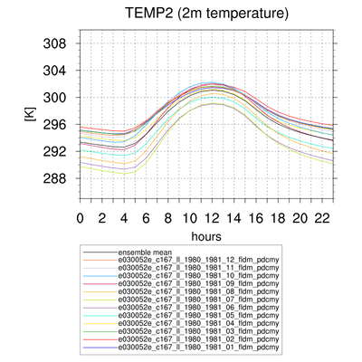

6. Visualisation of Climate Data¶
using PyNGL developed by NCAR *by T. Weber and A. Kriegsmann
PyNGL freely available!
Webpage: https://www.pyngl.ucar.edu/
6.1. PyPlotTools-1.2.4¶
Collection of bash scripts creating plots with python
by Torsten Weber
6.1.1. Why?¶
- To have a quick look at the data
- To create simple plots with different features via command line
- To avoid increasing number of similar plot scripts
6.1.2. What?¶
- Five different bash scripts which create plots from NetCDF files by means of python
- Able to handle rotated coordinates by using PyRemo (thanks to the developer!)
- Works half-automatically
- Contains help text
- Running on mistralpp/eddy
- Can also be applied to different data sets, e.g. REMO data, ESM data, CRU data, etc.
6.1.3. What kind of plots?¶
pycontf – contour fill plots
pyvect – vector plots
pycontfvect – contour fill plots with an overlayed vector field
Features: plot non-rotated or rotated coordinates, collection of predefined colormaps, individual colormaps can be included, unit conversion, different plot formats, mark area with undefined values pyxy – line plots
Features: predefined colors/line pattern/x-axes (auto, daily/annual cycle, months, years), unit conversion, ensemble mean, running average, legend, different plot formats
pyclimdia – climate diagram (Walter-Lieth style)
6.1.4. Commands¶
pycontf <nc-file> <var_name> <output> (mandatory)
pycontf <nc-file> <var_name> <output> [<title> <colorbar> <cmin> <cmax> <clevs>]
Fig. 6.1 pycontf¶
pyvect <u_nc-file> <u-var_name> <v_nc-file> <v_var_name> <output> (mandatory)
pycontfvect <scalar_nc-file> <scalar_name> <u_nc-file> <u_var_name> <v_nc-file>
<v_var_name> <output> (mandatory)
Fig. 6.2 pycontv¶
pyxy <var_name> <output> <title> <xaxis> <yaxis> <ymin> <ymax> <nc-file(s)>
(mandatory)

pyclimdia <output> <loc_name> <tmin> <pmax> <hem> <t_nc-file> <t_var_name>
<p_nc-file> <p_var_name> (mandatory)

Fig. 6.3 clim¶
6.1.5. Known Issues¶
- Warnings: „tmEqualizeXYSizes is not a valid resource in x.PlotManage at this time”
- Spaces between latitude/longitude tickmarks are automatically determined
- Colorbar and figure title are coupled
- National boundaries in low resolution from the 90’s -> medium resolution up to date
- PyRemo: some workarounds to fix bugs and to get additional data information (CDO’s)
6.2. Instalation¶
eddy: * modules to be loaded: python/2.7-ve0, cdo/1.9.5 * Git source: http://FIRSTNAME.LASTNAME@git.gerics.de/PyREMO/PyPlotTools.git * Git source: http://FIRSTNAME.LASTNAME@git.gerics.de/PyREMO/PyREMO.git * PyPlotTools needs to be included in the PATH variable (.profile) * PyREMO needs to be included in the PYTHON-PATH variable (.profile)
MOTRE INFORMATION: https://git.gerics.de/PyREMO/PyPlotTools